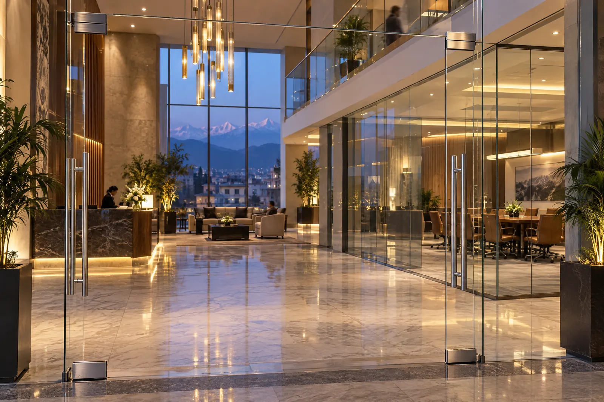
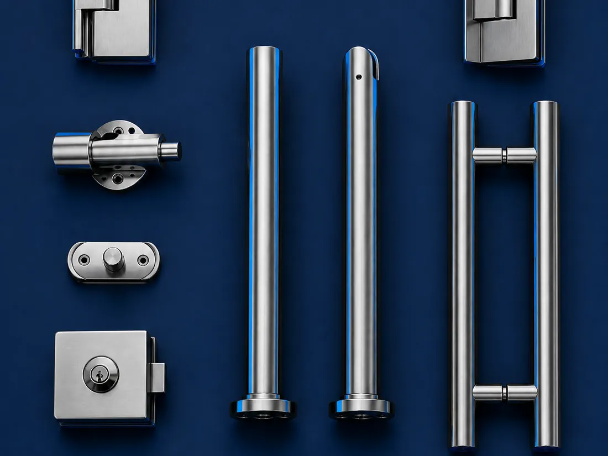
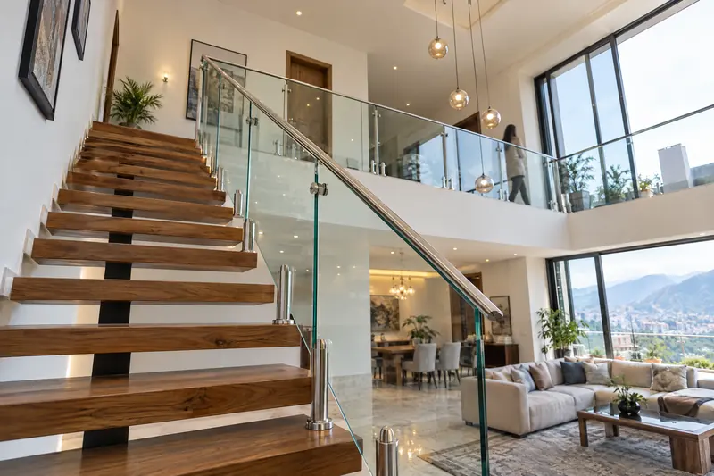
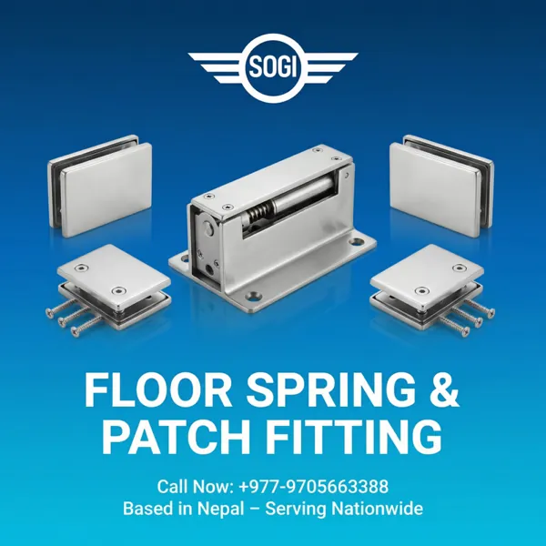
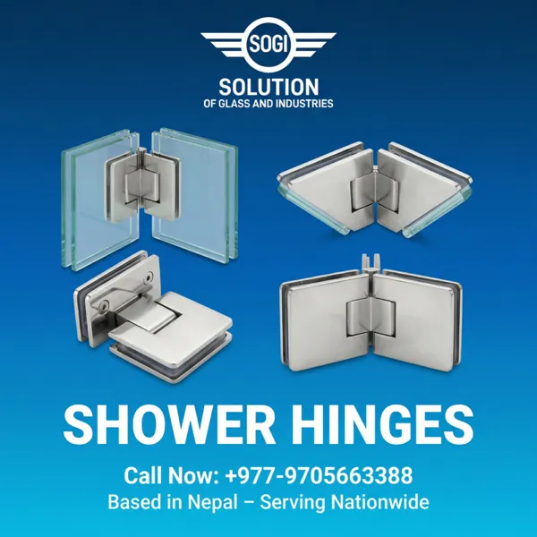
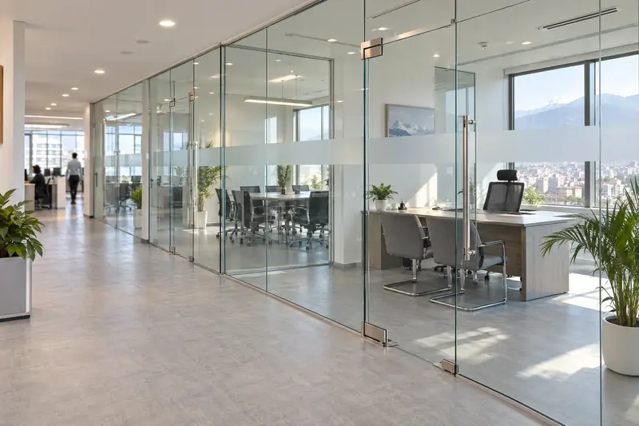
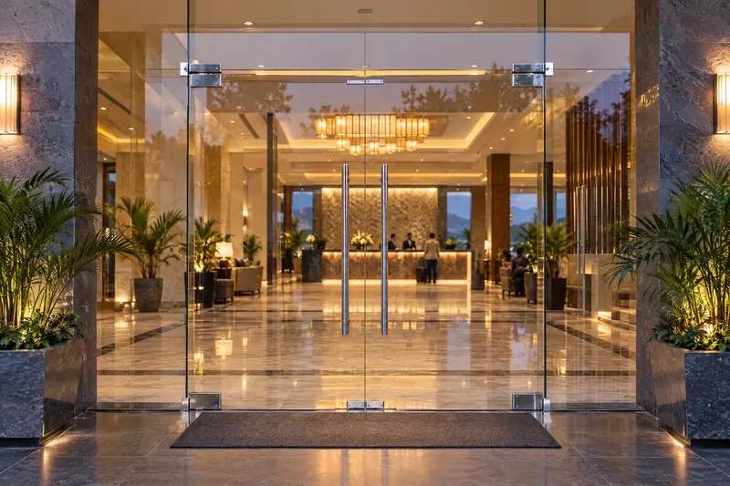
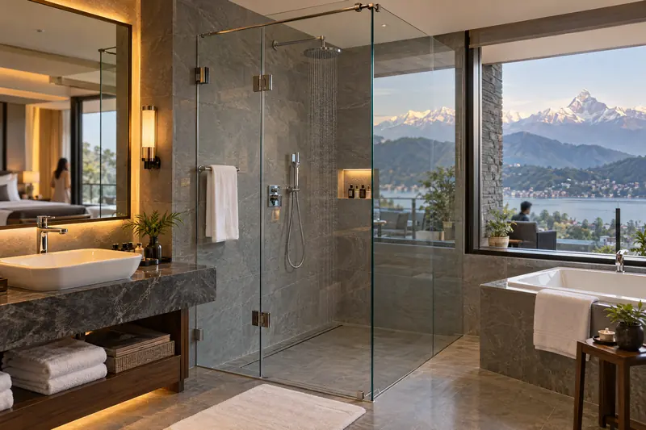
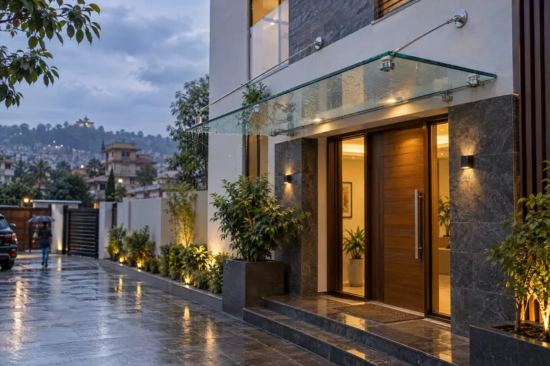

Architectural Glass Hardware, Made in Nepal
Desh ko Gaurav, Hamro UtpadanInternational Quality · Trusted by Architects, Contractors, Fabricators, Wholesalers & Retailers Nationwide
Who is SOGI?
SOGI – Solution of Glass & Industries is a Nepali manufacturer of architectural glass hardware and glass fittings, based in Bharatpur, Chitwan, with branches in the Kathmandu Valley and Birgunj and online ordering across Nepal.
SOGI makes stainless steel (SS304 and SS202) floor springs, patch fittings, glass connectors, shower hinges, railing spigots, spider and canopy fittings. It also sells toughened, laminated, DGU and fluted glass and mirrors (glass is supplied, not manufactured). Its SOGI Projects Division handles toughened glass work, glass fitting and installation for homes, offices, hotels, shops and interiors.
ग्लास हार्डवेयर · आर्किटेक्चरल हार्डवेयर · ग्लास फिटिङ · टफन ग्लास · ग्लास ढोका · ग्लास रेलिङ · बाथरुम ग्लास · इन्टेरियर ग्लास
| Company | SOGI – Solution of Glass & Industries |
| Manufactures | Architectural glass hardware & glass fittings (SS304 / SS202) |
| Sells | Toughened, laminated, DGU & fluted glass, mirrors, LED mirrors |
| Installs | Glass doors, partitions, shop fronts, showers, railings, canopies, spider glazing, interior glass (SOGI Projects) |
| Head office | Bharatpur, Chitwan, Nepal |
| Branches | Kathmandu Valley · Birgunj · online across Nepal |
| Hardware & glass | +977-9705663388 |
| Installation | +977-9705668833 |
Buy the hardware, or let us build the whole job
Fabricators and dealers buy SOGI fittings and glass. Homes, offices and hotels hire SOGI Projects to deliver finished glass work.

Architectural glass hardware & glass supply
Floor springs, patch fittings, connectors, shower hinges, spigots, spider and canopy fittings, plus toughened, laminated, DGU and fluted glass and mirrors.
- Fabricators
- Contractors
- Wholesalers
- Retailers

Glass fabrication & installation
One team from site survey to installation: partitions, frameless doors, shop fronts, showers, railings, canopies, spider glazing and repairs.
- Homes
- Offices
- Hotels & resorts
- Showrooms
Fittings for every toughened glass job
Stainless steel hardware for doors, partitions, showers, railings, canopies and facades, in mirror, matt, black and gold finishes.

Floor Spring & Patch Fitting
Concealed floor springs with top, bottom, lock and L-patch fittings for 10–12 mm toughened glass doors.

Glass Connectors
L, U, T, GTG 90° and GTG 180° connectors and wall-to-glass connectors for partitions and showers.

Shower Hinges
Glass-to-wall and glass-to-glass shower hinges (90°, 135°, 180°) in SS304 for wet areas.

Spigot & Railing Accessories
SS304 spigots, side studs, glass clamps and handrail parts for glass railings.

Spider Fittings
1-, 2- and 4-arm stainless steel spider fittings for spider glazing and canopies.

Glass Door Handles
Stainless steel pull handles for glass doors in mirror, matt, black and gold finishes.

Canopy Fittings
Wall brackets, tie rods and glass clamps for laminated glass canopies.

Aluminium Track & SS Channel
U-channels, bottom tracks and top rails for glass partitions and shop fronts.
The right glass for every application
Toughened, laminated, DGU, fluted and back-painted glass and mirrors, sold by SOGI and supplied to your size.
Toughened (tempered) glass
About 4–5× stronger than normal glass. If it breaks, it shatters into small blunt pieces. It can't be cut or drilled after toughening.
Best for: Partitions, doors, shop fronts, showers, shelves
Laminated glass
Two sheets bonded with a PVB layer. If broken, the pieces stay stuck and the panel stays in place.
Best for: Overhead glass, railings, canopies, security fronts
DGU – double glass unit
Two sheets with a sealed air gap. Cuts outside noise and heat.
Best for: Windows, skylights, facades, meeting rooms
Fluted glass
Ribbed surface: light passes through, detail behind is hidden.
Best for: Decorative partitions, cafés, salons
Back-painted glass
Glass painted on the back in any shade. Easy to clean.
Best for: Kitchen backsplash, wall cladding, writing boards
Mirrors & LED mirrors
Wall, stand and LED mirrors (front-lit and back-lit) in round, oval, arch, square and rectangle shapes.
Best for: Homes, hotels, salons, showrooms
Finished glass work, installed across Nepal
We plan, build and deliver. Survey, design, fabrication, installation and support are all handled by one team.

Glass Partitions & Cabins
Frameless and framed partitions, glass cabins and conference rooms that divide space without blocking light.
Learn more
Frameless Glass Doors
Single, double and sliding toughened glass doors on SOGI floor springs and SS304 patch fittings.
Learn more
Shop Front & Showroom Glass
Glass fronts behind shutters, frameless shop fronts and tall showroom glazing.
Learn more
Shower Enclosures & Bathroom Glass
Fixed panels, swing and sliding enclosures and corner cubicles with rust-resistant SS304 hinges.
Learn moreGlass Railings & Balconies
Staircase, balcony and terrace railings on SS304 spigots, side studs or base channels.
Learn more
Glass Canopies & Skylights
Entrance canopies, skylights and glass roofs, always in laminated glass for overhead safety.
Learn moreA Nepali manufacturer you can rely on
Manufactured in Nepal
SOGI makes its own stainless steel glass fittings in Bharatpur, Chitwan. Local production means local stock and local support.
Honest steel grades
SS304 for wet and outdoor areas, SS202 for dry indoor use. We check raw material grade so you get the steel you pay for.
1,200+ products in one place
Doors, partitions, showers, railings, canopies, spider glazing, silicone and accessories from one supplier.
Survey to installation
SOGI Projects handles survey, design, fabrication and installation, using SOGI hardware.
Safety first
Laminated glass for all overhead glass and for railings above the ground floor. Polished edges on every railing.
Nationwide supply
Head office in Bharatpur, branches in the Kathmandu Valley and Birgunj, and online orders delivered anywhere in Nepal.
Five steps. One team.
Glass work, done right, from survey to installation.
Site survey
Exact measurement at three points on site.
Design
Glass type, thickness, hardware and drawing.
Fabrication
Cutting, holes and polishing, then toughening.
Installation
A trained team fits it with SOGI SS304 fittings.
Support
Service, repair and maintenance after handover.
Built for the trade, ready for homeowners
- Fabricators & glass shops: dealer supply of fittings, channels and silicone.
- Contractors, architects & interior designers: specification help and project supply.
- Wholesalers & retailers: bulk orders across 1,200+ products.
- Hotels, resorts & builders: multi-unit showers, railings, doors and shop fronts.
- Homes, offices, banks, hospitals & schools: complete installations by SOGI Projects.
Bharatpur, Kathmandu Valley, Birgunj, and online across Nepal
Visit our head office in Bharatpur or our branches in the Kathmandu Valley and Birgunj, or order online on WhatsApp for delivery anywhere in Nepal.
BharatpurHQ
Chitwan · Head office & factory
Kathmandu Valley
Kathmandu · Lalitpur · Bhaktapur
Birgunj
Parsa, Madhesh · branch
All of Nepal
Order online on WhatsApp or phone · nationwide delivery
Common questions
What does SOGI do?
SOGI – Solution of Glass & Industries is a Nepali company based in Bharatpur, Chitwan. It manufactures architectural glass hardware (floor springs, patch fittings, connectors, shower hinges, spigots, spider and canopy fittings), sells toughened, laminated and DGU glass and mirrors from trusted glass makers, and through SOGI Projects fabricates and installs finished glass work across Nepal.
Where can I buy glass hardware in Nepal?
SOGI supplies glass hardware wholesale and retail from its Bharatpur (Chitwan) head office, with branches in the Kathmandu Valley and Birgunj, and online orders delivered across Nepal. WhatsApp +977-9705663388 for availability and rates.
Who installs toughened glass work in Nepal?
SOGI Projects Division handles glass partitions, frameless doors, shop fronts, shower enclosures, glass railings, canopies, spider glazing and repairs across Nepal, from site survey to installation. WhatsApp +977-9705668833.
What is the difference between SS304 and SS202 fittings?
SS304 has more nickel and chromium, so it resists rust much better. It is the right grade for bathrooms, entrances and outdoor work. SS202 is a lower-cost grade for dry indoor use. SOGI makes both and recommends SS304 for any wet or outdoor area.
Do you sell to fabricators and dealers?
Yes. SOGI's main customers are fabricators, contractors, wholesalers and retailers. Send your product list on WhatsApp for dealer rates and bulk supply.
Which number should I contact?
For glass hardware, glass and mirrors, call or WhatsApp +977-9705663388. For installation and site work by SOGI Projects, call or WhatsApp +977-9705668833.
Planning glass work or need hardware?
Send your product list, site photo or drawing on WhatsApp. Hardware & glass: +977-9705663388 · Installation: +977-9705668833